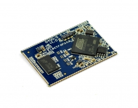

G400
 
G400S and G400D are .NET Micro Framework (NETMF) System on Modules.
Using the NETMF software
We discourage the use of NETMF software on our products in favor for TinyCLR OS. Read more about the use of NETMF and TinyCLR OS.
Using TinyCLR OS
If haven't yet, read about using NETMF devices with TinyCLR OS
Loading Bootloader Version 2
- Download the bootloader file.
- Download and install SAM-BA. We tested SAM-BA.2.12.exe but we should move to SAM-BA.2.16 for Windows
- Download and unzip the update scripts. You will have a folder called
G400 Bootloader Installer. - Rename the bootloader file, downloaded earlier, to bootloader.bin and move it to the
G400 Bootloader Installerfolder. - Connect SPI1_MISO pin to ground and reset the board. Wait three seconds and remove the connection between SPI1_MISO and ground. on FEZ Raptor, SPI1_MISO is pin 8 on socket 3.
- Open up the Device Manager, look under Ports, and find a COM port similar to "Bossa Program Port" or "GPS Detect".
- In the
G400 Bootloader Installerfolder, runFlash Bootloader.bat. - When prompted, enter the number of the COM port found under Device Manager. For example: for COM10, enter just 10.
- You will see "Bootloader Update Complete" when the update is finished. The update will take several minutes.
Loading the Firmware
Tip
First make sure you have bootloader v2 loaded. This needs to be done only once.
To activate bootloader v2, hold the LDR0 signal low while resetting the board.
Download the G400 firmware and follow Loading the Firmware steps.
Tip
The upload takes several seconds to start. Wait about a minute to start seeing the upload progress.
G400 Based products
G400 Development Board

The development system used for evaluating the G400 SoM.
G400 TH Module

A though-hole version of G400.